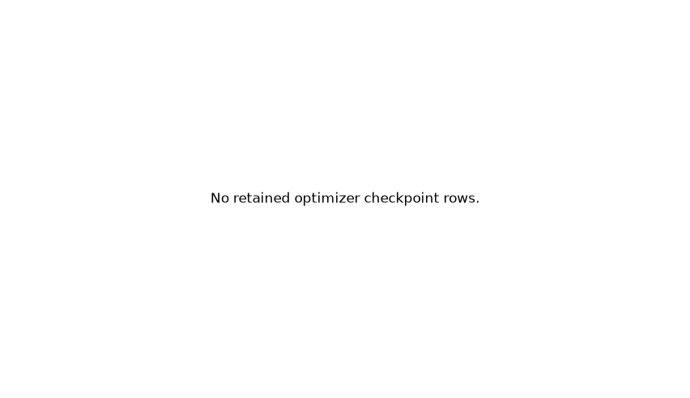
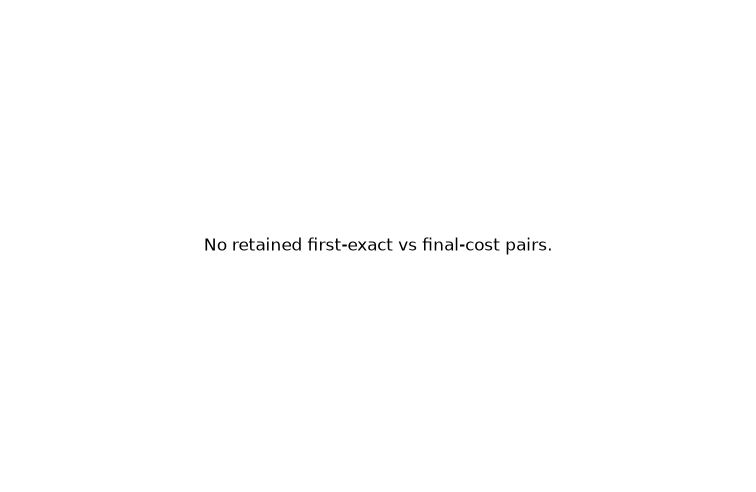

U is the authoritative planning state. A free-space direct actuator-travel reference is available. Planner families expose different internal metrics, so those units are not pooled. This report is descriptive and is not a global ranking.
V4.2C OMPL planner-geometry portfolio
No-inference: OMPL planner-geometry portfolio; descriptive only; no mechanism performance inference.
Physical state identity is complete PhysicalState encoded to OMPL in
actuator coordinates U. Local motion is input-linear. The objective is
Euclidean actuator travel. Goals are a frozen finite physical set. Q and X
appear only as projections, tasks, metrics, and interpretation.
The free-space direct U-linear represented-set reference remains available
from the Version 3 / V4.2B planning contract. This portfolio does not disable
valid direct edges. Lattice Dijkstra/A* references live in the frozen V4.2B
planning audit and are not recomputed here.
RRT* and BIT* continue cumulatively inside one process. FMT is an
independent sample-count run; sample count is not a wall-clock continuation.
Units remain actuator travel in U plus family-specific internals.

Optimizer best-cost versus checkpoint · unit: actuator travel in raw U (Euclidean); cumulative checkpoints in seconds; PlannerData vertices/edges
Plotted row provenance
No plotted rows.

First exact cost versus final cost · unit: actuator travel in raw U
The three KPIECE IDs share physical U-state, local motion, objective, and
non-projection knobs. Only the declared exploration projection changes.
Cell occupancy is shown when retained; otherwise the binding omission is kept
visible as null plus reason.
KPIECE projection occupancy · unit: normalized-U projection cells; not comparable to tree vertices
PRM and RRTConnect remain architecture controls. They are not promoted to
primary mechanism evidence. Multi-goal binding workarounds stay explicit in
row provenance rather than being relabeled as a true multi-goal solve.
Control planner IDs:
ompl_prm, ompl_rrt_connect.
7. Optional PDST
Geometric PDST is optional and nonblocking. It remains visible when
disabled or unsupported.
planner_id
status
required
ompl_pdst_u
not_run_optional_disabled
False
8. Task classes, failures, and unsupported capabilities
Failed attempts are retained and are not rewritten as successes.
Unsupported capabilities stay in the table.
row
status
unavailable_reason
none retained
Selected goal candidate IDs · unit: candidate ID counts (dimensionless)
Plotted row provenance
No plotted rows.
9. Mechanism-paired summaries by case and task
Each difference is four-bar minus gearbox inside one planner/case/task
condition. These are descriptive paired deltas, not a mechanism ranking.
The certified free-space actuator box and the direct U-linear connector are a strong reference and a weak routing challenge. V4.2C diagnoses planner geometry, finite-time convergence, and U/Q/X projection sensitivity. It does not establish obstacle-routing superiority or general application performance. Valid direct connections are not disabled.
Prohibited claims:
no universal planner ranking
no universal mechanism advantage
no pooled cross-family effort score
no obstacle-routing inference from free space
finite-time failure is not unreachability
optional PDST does not prove metric independence
Source of truth is summary.json plus the
retained row JSON under the stage directory. HTML does not introduce
calculations that cannot be regenerated from those files.